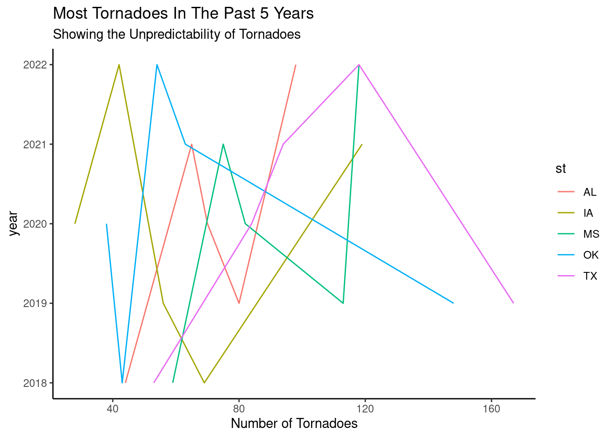

Two-letter postal abbreviation for the state (DC = Washington, DC; PR = Puerto Rico; VI = Virgin Islands).
stf
integer
State FIPS (Federal Information Processing Standards) number.
mag
integer
Magnitude on the F scale (EF beginning in 2007). Some of these values are estimated (see fc).
inj
integer
Number of injuries. When summing for state totals, use sn == 1 (see below).
fat
integer
Number of fatalities. When summing for state totals, use sn == 1 (see below).
loss
double
Estimated property loss information in dollars. Prior to 1996, values were grouped into ranges. The reported number for such years is the maximum of its range.
slat
double
Starting latitude in decimal degrees.
slon
double
Starting longitude in decimal degrees.
elat
double
Ending latitude in decimal degrees.
elon
double
Ending longitude in decimal degrees.
len
double
Length in miles.
wid
double
Width in yards.
ns
integer
Number of states affected by this tornado. 1, 2, or 3.
sn
integer
State number for this row. 1 means the row contains the entire track information for this state, 0 means there is at least one more entry for this state for this tornado (om + yr).
f1
integer
FIPS code for the 1st county.
f2
integer
FIPS code for the 2nd county.
f3
integer
FIPS code for the 3rd county.
f4
integer
FIPS code for the 4th county.
fc
logical
Was the mag column estimated?
Packages
packages(“ggplot2”)
library(tidyverse)
── Attaching core tidyverse packages ──────────────────────── tidyverse 2.0.0 ──
✔ dplyr 1.1.2 ✔ readr 2.1.4
✔ forcats 1.0.0 ✔ stringr 1.5.0
✔ ggplot2 3.4.2 ✔ tibble 3.2.1
✔ lubridate 1.9.2 ✔ tidyr 1.3.0
✔ purrr 1.0.1
── Conflicts ────────────────────────────────────────── tidyverse_conflicts() ──
✖ dplyr::filter() masks stats::filter()
✖ dplyr::lag() masks stats::lag()
ℹ Use the conflicted package (<http://conflicted.r-lib.org/>) to force all conflicts to become errors
library(maps)
Attaching package: 'maps'
The following object is masked from 'package:purrr':
map
Linking to GEOS 3.8.0, GDAL 3.0.4, PROJ 6.3.1; sf_use_s2() is TRUE
library(RColorBrewer)library(esquisse)
Explorations
What are the states most at risk?
Texas is most at risk for tornadoes and some secondary states like florida.
#reading in the datatornado <-read_csv("tornado.csv")
Rows: 68693 Columns: 27
── Column specification ────────────────────────────────────────────────────────
Delimiter: ","
chr (2): tz, st
dbl (21): om, yr, mo, dy, stf, mag, inj, fat, loss, slat, slon, elat, elon,...
lgl (1): fc
dttm (1): datetime_utc
date (1): date
time (1): time
ℹ Use `spec()` to retrieve the full column specification for this data.
ℹ Specify the column types or set `show_col_types = FALSE` to quiet this message.
most_tornadoes |>ggplot(aes(x =reorder(st, -n), y = n)) +geom_bar(stat ="identity", fill ="#d16002") +labs(title ="States with the most tornadoes over the years",x ="states in abbreviations",y ="number of tornadoes" ) +theme_dark()
But i want to see which state has had the most tornadoes in the past 5 years?
Texas is in the top 10 in 3 of the past 5 years Texas has the most in 2019,2022 and 2020.
`summarise()` has grouped output by 'st'. You can override using the `.groups`
argument.
past5 |>ggplot(aes(x = n, y = yr, color = st)) +geom_line() +labs(title ="Most Tornadoes In The Past 5 Years",subtitle ="Showing the Unpredictability of Tornadoes",x ="Number of Tornadoes",y ="year" ) +theme_classic()

past5 |>ggplot(aes(x = st, y = n, color = yr)) +geom_point()
past5 |>ggplot(aes(x = st,y = n, fill = yr)) +geom_bar(stat ="identity") +labs(title ="Tornadoes over The Past 5 Years",subtitle ="showing the impact more clearly",x ="states",y ="Number of Tornadoes" )
What was the most dangerous tornado in the U.S between 1950-2022?
The tornado that was the most dangerous from 1950 to 2022 was the tornado in 2011 that happened in Missouri there were 158 fatalities the tornado was called Joplin.